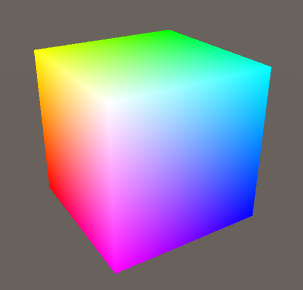

这节内容跟 渲染管线 内容关系比较紧密，建议先了解渲染管线的整个流程。
我们知道渲染管线整个流水线都有数据的输入输出，这样就存在几个问题：
- 这些数据都是什么？
- 这些数据输入或输出到哪里？
- Shader 里面怎么体现？
这节内容主要是讲上面三个问题
数据的种类
一般情况能利用的有如下几种：
- 坐标系中的位置 (position)
- 法线 (normal)
- 切线 (tanent)
- 颜色 (color)
- 纹理坐标 (texture coordinate)
数据的输入输出
数据存放在寄存器里面。输入的时候从寄存器读取数据，输出的时候将数据写到寄存器里面。
Shader 中的体现
首先是数据的种类的表示。现实生活中，我们也喜欢物品分类，然后对分类取个名字或贴个标签，以后我们便可以从这一类中存取属于这类的物品。Shader 里面也有类似的做法，给 Shader 函数输入输出的数据结构打上标签。
这种标签叫做 语义（Semantic）， 打标签的行为叫做 语义绑定 。一般用一个冒号后面带上标签的名字来表示。长相大概是这个要样子 :XXXXX （XXXXX 表示语义）。
我们有了标签，那我们把它放在 shader 代码什么地方呢？ 之前提到我们是给函数输入输出的数据结构打上标签，而函数的输入就是参数。对于参数，我们可以使用结构体也可以直接使用基础数据类型，所以能出现如下两种位置：
使用基础数据类型做参数时，大概是这个样子：
void shaderFunction(dataType variableName :XXXXX)
使用结构体声明中时（这个结构体要当作 shader 函数的参数）大概是这个样子:
struct StructName {
datatype propertyName :XXXXX
}
另外一种是函数的输出，如果直接给返回值后面带上标签，代码会长成这个样子：
dataType :XXXXX shaderFunction()
{
.....
}
但是 CG 等语言没有像上面那么做（个人觉得上面的方式会容易让人误解为标签就是返回值类型，其实不是），而是将标签移到函数的括号后面，所以最后应该只长成这个样子：
dataType shaderFunction() : XXXXX
{
......
}
好了，就上面3个位置。 那语义（上面的 XXXXX）都有哪些呢？ 一般有如下几种：
- POSITION： 表示顶点在物体坐标内的位置
- SV_POSITION： 表示被转换到投射空间后的坐标位置 (通过 UNITY_MATRIX_MVP 这个矩阵可以转换)，可以参照 坐标系 这一节内容。
- COLOR： 表示颜色
- NORMAL： 表示法线
- TANGENT： 表示切线
- TEXCOORD0 和 TEXCOORD1 : 纹理坐标 UV0 和 UV1。UV 换个说法就是 XY 坐标，只不过是为了怕重名导致的混淆，所以叫做UV。 U 表示横坐标， V表示纵坐标。
现在我们知道通过标签来表示数据的分类, 那怎么表示输入和输出呢？答案是用关键词 in, out, inout。 光从名字上来看我们就知道 in 表示输入， out 表示输出， inout 表示输入输出。 参数如果特别表明，默认为输入。可以参考下在 Unity 编辑器里面的创建的默认 shader， 里面就有这几个关键词的用法。
最后要说明一点，上面所说的在 Shaderlab 中都应该包括在 CGPROGRAM ... ENDCG 语句块里面，因为这个是 CG 等语言的内容。
举个例子
现在举个代码的例子来说明（如果对下面代码结构等不是很明白，强烈建议从头开始看本系列的文章）：
Shader "Custom/Shader10" {
SubShader {
Tags { "RenderType"="Opaque" }
pass {
CGPROGRAM
#pragma vertex vert
#pragma fragment frag
// 结构体中使用语义绑定
struct VertexOutput {
float4 pos :SV_POSITION; // 转换到投射空间后位置
float4 texcoord :TEXCOORD0; // 顶点颜色
};
VertexOutput vert(in float4 pos :POSITION /*参数中使用予以绑定*/)
{
VertexOutput output;
output.pos = mul(UNITY_MATRIX_MVP, pos);
output.texcoord = pos + float4(0.5, 0.5, 0.5, 0);
return output;
}
float4 frag(VertexOutput input) :COLOR // 函数后面使用语义绑定
{
return input.texcoord;
}
ENDCG
}
}
}
上面的 shader 如果用在立方体上渲染出漂亮的 RGB 立方体，如下图：

总结
用语义和语义绑定来表示数据和数据的流向。
系列文章目录
- 瞎聊 Unity3D Shader 系列之一：GPU 与 Shader Model
- 瞎聊 Unity3D Shader 系列之二：渲染管线
- 瞎聊 Unity3D Shader 系列之三：Shader 土地上的语言们
- 瞎聊 Unity3D Shader 系列之四：坐标系
- 瞎聊 Unity3D Shader 系列之五：RGBA 101
- 瞎聊 Unity3D Shader 系列之六：初识 Shaderlab
- 瞎聊 Unity3D Shader 系列之七：究竟谁先被渲染？
- 瞎聊 Unity3D Shader 系列之八：#pragma 指令
- 瞎聊 Unity3D Shader 系列之九：用来包装变量的 Properties
- 瞎聊 Unity3D Shader 系列之十：数据的标签：语义绑定